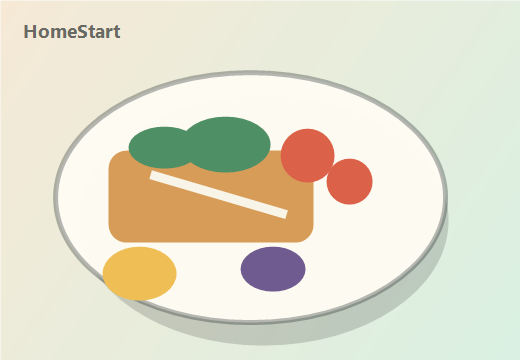

Recipes are not the core shortage.
The bigger barrier is uncertainty about whether a recipe will fit the user's time, confidence, and real weekday energy.
Personalized cooking start
A short setup helps HomeStart recommend recipes, grocery lists, and step-by-step guidance that match your current routine.

Step 1 of 5
Design rationale
This view mirrors the presentation notes in docs/onboarding-rationale.md and explains the assumptions, journey, research translation, and product decisions behind the prototype.
The bigger barrier is uncertainty about whether a recipe will fit the user's time, confidence, and real weekday energy.
The flow aims for one saved recipe and one cook attempt in the first week, not a complete lifestyle change.
Questions map directly to supported features: step-by-step recipes, skill-based recommendations, and grocery list generation.
Christina wants healthier, lower-cost meals, but recipe complexity and past false starts make her cautious.
The app should plan around 30-45 minutes total, including cleanup, because that is the practical ceiling for early habit formation.
Early users should answer a few concrete questions and immediately see the payoff in a short recipe set.
A user who cooks 1-2 nights may want quick dinners, meal prep, prep shortcuts, or flexible fallbacks. The app should ask.
Ask about today's routine without assuming what habit the user wants next.
Use a usual range in onboarding, then re-rank by the time available right now.
Use "not sure" choices where the user may not have a confident answer.
Separate restrictions from preferences so the first recommendations are trustworthy.
End with a small set of recipes and a direct save action.
How often the user currently cooks. This should not imply a desired rhythm.
Whether the user wants quick dinners, meal prep once, prep shortcuts, or flexible fallbacks.
The user's usual range is a default; today's available time re-ranks the recipe set.
After time and energy, where dinner fails: deciding, ingredients, prep, cooking flow, or cleanup.
What cooking needs to beat: takeout, eating out, snack dinner, or pantry odds and ends.
Why cooking is hard to repeat after a high-effort meal or batch prep session.
Whether recipes break down through timing, vague instructions, prep load, or surprise ingredients.
Dietary restrictions, health intent, servings, and ingredient tolerance.
Critique: 1-2 nights does not mean the user wants a steadier rhythm. Change: frequency now captures the current baseline, while a separate preferred-pattern question captures quick dinners, meal prep once, prep shortcuts, or flexible fallbacks.
Critique: meal prep creates relief between sessions, then dread before the next large effort. Change: restart friction is captured so batch cooking is treated as a cycle with a reset cost, not only as a benefit.
Critique: the hard-night question needed a clearer purpose. Change: it now asks what cooking needs to replace and affects recipe ranking, plan summary chips, and match reasons.
Critique: time and low energy are broad constraints that can explain everything. Change: the flow asks where dinner actually breaks down: choosing what to cook, getting ingredients, starting prep, keeping track while cooking, or facing cleanup.
Critique: fixed 30 or 45 minute recipes overfit one day and can fail when the user only has 10 minutes. Change: onboarding captures a usual range, then recommendations ask how much time the user has right now and re-rank without hiding longer usual-range recipes.
Use plain-language skill choices and default recommendations to beginner-safe recipes.
Ask for a usual weekday time range before asking about cuisine, tools, or broader tastes.
Capture the failure mode and personalize step-by-step guidance instead of just recipe content.
Translate a vague aspiration into concrete food directions like more vegetables or lighter takeout swaps.
Separate restrictions from preferences so early recommendations avoid trust-breaking misses.
Ask about effort pattern and restart friction so batch cooking does not become a second-cycle failure.